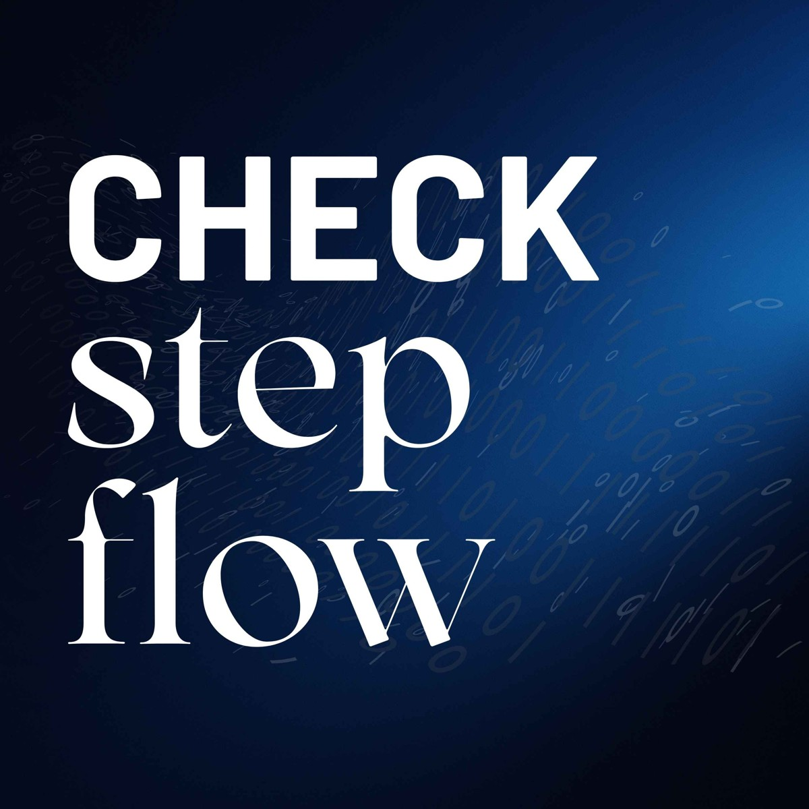
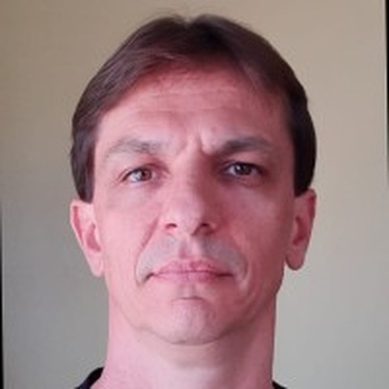
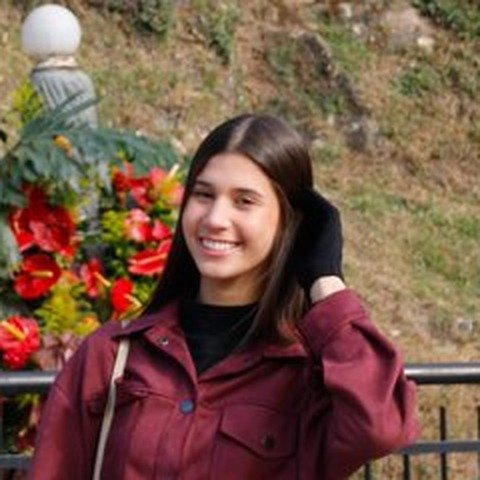
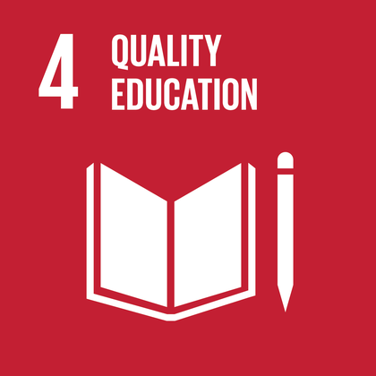
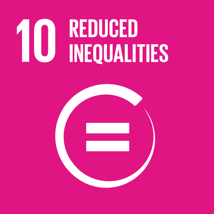
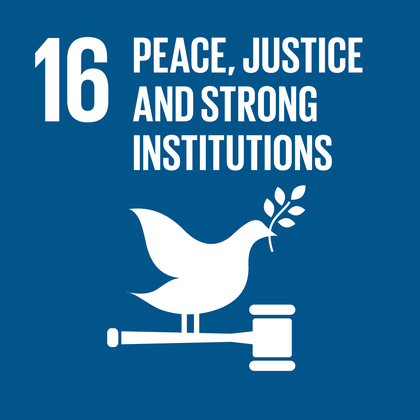
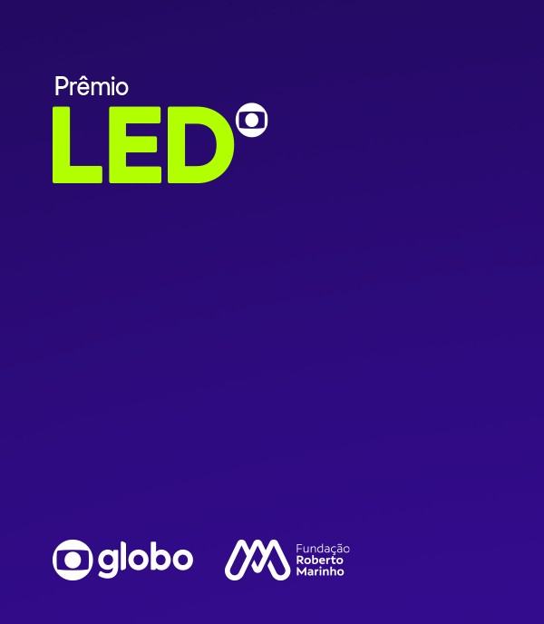

Uma teoria de 1944, atualizada para o feed
Tudo começa no emissor, seja uma mídia ou uma fonte, que produz o conteúdo e o coloca em circulação antes de ele passar pelos dois elos até chegar a você.
Em 1944, Lazarsfeld e Katz mostraram que a mídia chega ao público passando por líderes de opinião. É o Two-Step Flow, ainda válido: o influenciador é o primeiro elo.
Hoje existe um segundo mediador invisível. O algoritmo decide o alcance de cada mensagem antes de ela chegar a você, e quem paga o impulsionamento influencia o que aparece.
Quem recebe deixa de ser plateia: com método, vira gatekeeper ético da própria rede. A tese tem nome: Two-Step Flow Algorítmico.
Clique em cada elo para ler
Two-Step Flow x Check Step Flow
Lazarsfeld, Berelson e Gaudet (1944); Katz e Lazarsfeld (1955); tese do Check Step Flow
O ecossistema digital brasileiro em números
de brasileiros usam a internet, 86,9% da população
de identidades em redes sociais, 70,4% da população
de conexões móveis ativas, mais que habitantes
das pessoas com 10 anos ou mais usam internet
Quase todos se informam nas redes, poucos sabem diferenciar
dos brasileiros se informam por redes sociais
conseguem diferenciar uma notícia verdadeira de uma falsa, a menor taxa entre os países analisados
Check, Step e Flow ensinam a diferenciar: sinalizar o conteúdo, decodificar o mecanismo e devolver ação ao público.
O brasileiro vê o problema, mas nem sempre checa
dos usuários de redes sociais viram notícias que desconfiam serem falsas nos últimos seis meses
brasileiros acham que notícias falsas impactam as eleições
dos internautas dizem checar sempre se o que recebem nas redes é verdadeiro
Ensinar o passo a passo da checagem, aproximar os canais de verificação do dia a dia do jovem e cultivar o hábito de apurar antes de compartilhar.
Relatório de pesquisa do Check Step Flow, 14/10/2026
Dois caminhos contra a desinformação: certificar quem fala ou preparar quem ouve
Ocidente: Finlândia
Educação midiática transversal desde a infância, alta confiança nas instituições e uma estratégia nacional que previne antes de reagir. O resultado é a chamada imunidade cognitiva.
Oriente: China
Desde o fim de outubro de 2025, quem fala de saúde, direito, finanças e educação precisa comprovar qualificação formal, e as plataformas respondem se não fiscalizarem. O objetivo declarado é conter golpes e informação falsa. Críticos apontam risco para a liberdade de expressão.
O Check Step Flow combina um pouco dos dois: da Finlândia, a educação transversal, que dá método a todo o público para sinalizar, decodificar e devolver ação; da China, a ideia de que temas sensíveis pedem qualificação, por isso defendemos que quem fala de cada área seja técnico dela e convidamos especialistas.
Fontes a conferir: European Media Literacy Index (Open Society Institute, Sofia); UOL, 03/11/2025; Exame e Forbes Brasil, 2025 (Administração Estatal de Rádio e Televisão e Ministério da Cultura e Turismo da China)
CHECK, STEP, FLOW: do alerta à ação
A equipe monitora tendências virais e sinaliza conteúdos que promovem desinformação, discurso de ódio ou publicidade financeira nociva.
Entrega
Cada tendência sinalizada vira um dossiê de caso, com fontes e contexto.
1. Quem lidera?
O líder de opinião do caso.
2. Como amplifica?
O papel do algoritmo.
3. Quem paga?
E em função de quê.
4. O que se normaliza?
O efeito social do conteúdo.
Um especialista voluntário responde às quatro perguntas em cada caso.
O caso vira roteiro curto de checagem, sinais de alerta e uma contranarrativa que o próprio público pode produzir.
Resultado
Quem recebe vira gatekeeper ético da própria rede.
Um só caso: o mercado das bets
Episódio "O Algoritmo da Fortuna: o mercado das bets e a indústria da desigualdade", com guias de prevenção em português e inglês.
por mês via Pix para casas de apostas
de pessoas enviaram dinheiro a bets em um mês
perfis de influenciadores removidos por publicidade irregular
Rev-Share
O influenciador recebe uma parte DAS PERDAS de cada jogador que trouxe.
CPA
Pagamento fixo por cada novo apostador cadastrado pelo link.

Prof. Renan Fae
Gestor da HF News, laboratório de comunicação da UVV, e mestre em Sociologia. Foi mentor do projeto.
Um projeto sobre checagem que pode ser checado
O que é
O código do site fica público no GitHub. Qualquer pessoa pode ler os arquivos, ver cada alteração feita e acompanhar o histórico completo.
Por que adotamos
Um projeto de alfabetização midiática precisa ser transparente. Os dados, as fontes e as mudanças ficam à vista, sem caixa-preta.
O que permite
Acesso gratuito, conferência por terceiros e reaproveitamento do método por professores, escolas e outras equipes.
O Check Step Flow ensina a conferir fontes, e o repositório aberto permite conferir o próprio projeto.
Toda mudança é revisada antes de ir ao ar
Primeira versão do site no ar
Guias em português e inglês e ajustes de conteúdo
Novo visual: Globo LED, diagrama animado e cartões que viram
Números e traduções revisados em português e inglês
Em outras palavras: a mudança é feita numa cópia, salva passo a passo, conferida por alguém e só então substitui a versão que está no ar.
Histórico de alterações do projeto no GitHub
Dois fundadores e uma rede de especialistas

Estratégia de conteúdo e pesquisa
Estudante de Publicidade
Produção e gestão de comunidade
Estudante de Publicidade
- Sociologia
- Psicologia
- Jornalismo
- Economia
- Educação
Reconhecimento e alinhamento com a ONU
Reconhecimento UNESCO
Respaldo internacional: o projeto participou do Youth Hackathon 2026, entre submissões de 129 países
iniciativas selecionadas no Prêmio LED 2027, entre elas o Check Step Flow
Próximo passo: Intercom e Expocom, com apoio de contatos da universidade

ODS 4
Educação de qualidade: guia e site de acesso público e gratuito.

ODS 10
Redução das desigualdades: foco no público de baixa renda, o mais exposto às bets.

ODS 16
Instituições eficazes: cidadãos capazes de escrutínio informacional.
Planos para 2027 e palestras nas universidades
Expocom Sudeste
Produto experimental indicado pela UVV. Categoria Produção Transdisciplinar, Comunicação e inovação.
Expocom Nacional
Etapa seguinte do Intercom, para os trabalhos aprovados na regional.
Revista Intercom
Artigo científico depois do Expocom, em fluxo contínuo e sem pressa.
TCC
O conteúdo amadurece em texto acadêmico completo.
Pretendemos levar o Check Step Flow em palestras na UVV e na UFES, para apresentar a tese do Two-Step Flow Algorítmico e o roteiro de checagem a estudantes e professores.
Próximos cinco temas da trilha
Caso ela diga não
Misoginia digital: pedidos de casamento recusados viram espetáculo monetizado.
Soluções milagrosas
Curas, suplementos e cursos de enriquecimento sem respaldo técnico.
Desinformação eleitoral
Influenciadores e polarização no ciclo de 2026.
IA e deepfakes
Conteúdo sintético como terceira camada de mediação, ainda mais opaca.
Publicidade a crianças
Kidfluencers e publicidade não sinalizada dirigida a menores.
checkstepflow@gmail.com · checkstepflow.github.io/Check-Step-Flow
Obrigado pela oportunidade
Agradecemos ao Prêmio LED Globo, à Globo e à Fundação Roberto Marinho pela atenção ao Check Step Flow.


checkstepflow@gmail.com
